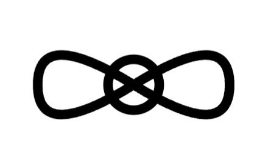

Author: Robert Charest (Glargod)
Revision Date: 17 August 2026
Status: Speculative integrative framework — developing
Universal Coalescence Theory (UC Theory) proposes that motion, time, gravity, and local physical behavior emerge from Pleichyma, an omnipresent, conserved fluid-like medium (\~10⁻²⁷ kg/m³). Pleichyma is treated as ontologically prior to the spacetime regime that is conventionally described by Big Bang cosmology. Ordinary spacetime is regarded as a projection of a richer underlying state space whose temporal sector carries directional structure \(\mathbf{T}\). Local dynamics are governed by tflux (the local temporal geometry) and coflux (the response of physical configuration to both spatial and temporal gradients within Pleichyma).
Consciousness (\(\varphi_c\)) is retained as a foundational compositional component of Pleichyma. It is capable of becoming locally dominant under high-coherence conditions and of modulating both coflux and the set of permitted temporal trajectories. A repeatable charged-marble experiment (0.197 s lag, \~5.6 m/s² versus 9.8 m/s²) serves as the primary empirical anchor. The theory offers an alternative fluid-dynamic reading of the observed cusp-core tension in galactic dark-matter modeling (including constraints informed by Gaia DR3) and a non-spatial interpretation of branching histories through latent temporal trajectories — the “ghost” degrees of freedom.
UC Theory is offered as an adjacent ontology rather than a competing Theory of Everything. It remains deliberately open to refinement, critique, and testing.
pleichyma /ˈplaɪ.kɪ.mə/ (noun)
An omnipresent, conserved fluid-like substrate underlying all phenomena — the source of motion, time, form, and the possibility of consciousness. It is proposed as ontologically prior to the spacetime regime conventionally described by Big Bang cosmology.
Pleichyma is represented by the Source symbol:

Core Properties:
From Greek pleion (“more/abundant”) + chymos (“juice/fluid”).
UC Theory originates in direct experiential insight (Fractal Mindscape) and seeks a unified substrate for phenomena that remain difficult within ΛCDM and the Standard Model. It does not claim to be a completed physical theory. It offers a coherent alternative ontology in which ordinary spacetime, gravity, and the appearance of branching histories are emergent projections of a deeper Pleichymal state space that already includes consciousness as a compositional degree of freedom.
UC Theory operates in two distinct regimes:
Mixing regimes without clear labeling is avoided.
[Mechanistic / Exploratory] Ordinary scalar time \(t\) is regarded as a projection of a richer directional structure \(\mathbf{T}\). Multiple temporal continuations may be available from a given Pleichymal state. These alternative trajectories need not constitute separate spatial universes; they may function as latent degrees of freedom that constrain which local transitions are dynamically permitted. The “4th-dimension ghost” language refers to this unseen directional structure of temporal possibility rather than to an additional visible spatial axis.
This formulation keeps open the possibility that inaccessible temporal trajectories leave measurable statistical fingerprints on transition rates, effective potentials, or coherence-dependent behavior without requiring direct causal signaling.
The following expressions are illustrative and phenomenological; they are not yet derived from first principles.
Local Pleichymal state (schematic):
Projection to ordinary spacetime:
Re-proportioning of consciousness fraction:
A conservation-consistent formulation for changes in \(\varphi_c\) remains under development. Earlier draft expressions that assumed \(\Sigma R = 1\) collapsed the deterministic term to zero and have therefore been removed. The theory continues to treat bounded, coherence-dependent re-proportioning of \(\varphi_c\) as physically meaningful; a mathematically adequate expression is still required.
Coflux (schematic):
Spatial gradients primarily drive ordinary acceleration; temporal gradients may influence causal structure, transition rates, or effective potentials. Gravity is interpreted as emergent coflux trajectories rather than a primitive force.
Note: Coefficients remain tunable phenomenological parameters. Future work aims to reduce or derive them and to give \(\mathbf{T}\) a precise mathematical home without prematurely embedding it in ordinary 4D spacetime.
The charged-marble experiment (≈10⁻⁹ C charge, 0.197 s lag, reduced acceleration ≈5.6 m/s² versus 9.8 m/s²) remains reproducible by the author. Independent verification under controlled conditions is required to exclude conventional electrostatic, thermal, and air-current artifacts. Shielded, temperature-matched, and (if feasible) reduced-pressure runs are priority next steps.
Consciousness coupling remains experimentally open. Candidate low-cost probes include EEG-monitored precision timing, attention-modulated free-fall or pendulum series, and coherence-dependent variations in local transition statistics.
Three situations must be distinguished:
These are not equivalent. The current absence of positive results is recorded only as the first case.
Pleichyma density variations and coflux offer a possible fluid-dynamic account of the observed cusp-core tension in galactic dark-matter modeling (including constraints informed by Gaia DR3). This remains a hypothesis under exploration. No stronger observational claim is advanced at present.
Current Limitations:
Failure Modes (what would challenge the theory):
UC Theory offers a speculative, integrative framework that attempts to bridge symbolic insight, mythic resonance, and proto-mechanistic description through the conserved medium of Pleichyma. Consciousness is retained as an ontologically primary compositional component. Ordinary spacetime and gravity are treated as emergent projections of a richer temporal and compositional structure. The theory remains a work in progress — open to refinement, critique, and collaboration.
Revision Notes (17 August 2026): Architectural layers retained. Consciousness kept foundational. Historical note on consciousness-as-compositional added (Symbolic/Exploratory register). Broken re-proportioning equation removed pending a conservation-respecting formulation. “Pre-Big Bang” language clarified. Falsifiability language for consciousness made more precise. Gaia/DM wording softened. \(\mathbf{T}\in\mathcal{T}\), the projection \(\Pi\), and the latent-trajectory (“ghost”) formulation preserved. Speculative and exploratory tone given priority while mathematical and linguistic cleanups are applied.